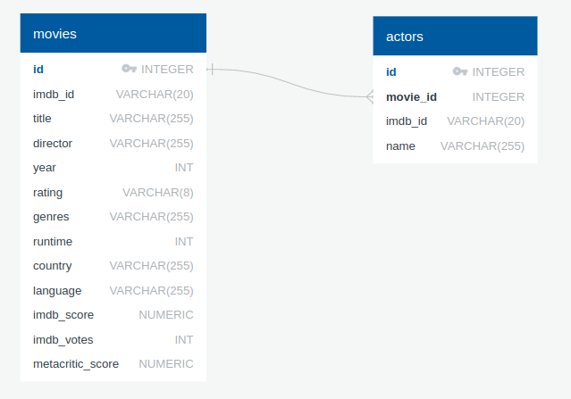

TD07 : Suite des lois de probabilités⚓︎
Exercice 1
On étudie une base de données sur le cinéma, qui possède deux tables, movies et actors.

- la table
moviespossède un attributidqui est sa clé primaire. - la table
actorspossède un attributidqui est sa clé primaire. Elle possède aussi un attributmovie_id, qui fait référence à l'attributidde la tablemovies.movie_idest donc une clé étrangère.
Question 1
Afficher le titre et le nom du réalisateur de tous les films sortis en 2002.
Correction
SELECT title, director
FROM movies
WHERE year = 2002
Question 2
Afficher le titre et l'année de tous les films réalisés par Steven Spielberg, et dont le metacritic_score est strictement supérieur à 80.
Correction
SELECT title, year
FROM movies
WHERE director = 'Steven Spielberg'
AND metacritic_score > 80
Question 3
Afficher le nom de tous les films dans lequel joue l'acteur Henry Fonda.
Correction
SELECT movies.title
FROM movies
INNER JOIN actors ON movies.id = actors.movie_id
WHERE name = 'Henry Fonda'
 Syntaxe des lois usuelles
Syntaxe des lois usuelles
Rappel : on utilise les simulateurs de lois du module random de la bibliothèque numpy.
Ceci nécessite systématiquement la présence des deux lignes suivantes au début de chaque script :
1 2 | |
-
 loi uniforme :
loi uniforme : rd.random()renvoie un réel dans \([0;1]\) qui suit une loi uniforme (chaque réel a la même probabilité d'apparition)rd.randint(a,b)renvoie un entier dans \([a;b[\) qui suit une loi uniforme (chaque entier a la même probabilité d'apparition). Attention, la valeur \(b\) n'est pas prise. Ce qui signifie que pour un tirage aléatoire uniforme de 0 et de 1, il faut utiliser l'expressionrd.randint(0,2).
-
loi binomiale :
rd.binomial(n,p)renvoie un entier qui suit une loi binomiale de paramètre \((n,p)\). (\(n\) répétitions d'une épreuve de Bernoulli de paramètre \(p\)) -
loi géométrique :
rd.geometric(p)renvoie un entier qui suit une loi géométrique de paramètre \(p\) (nombre d'expériences de Bernoulli de paramètre \(p\) avant l'apparition du premier succès) -
loi exponentielle :
rd.exponential(1/lambda)renvoie un réel qui suit une loi exponentielle de paramètrelambda.
 Comment renvoyer un vecteur plutôt qu'une seule valeur unique ? Il suffit de rajouter le nombre de simulations désirées comme dernier paramètre dans la parenthèse.
Comment renvoyer un vecteur plutôt qu'une seule valeur unique ? Il suffit de rajouter le nombre de simulations désirées comme dernier paramètre dans la parenthèse.
Exemple :
Pour simuler 10 tirages aléatoires de nombres égaux à 0 ou à 1, on utilisera :
>>> X = rd.randint(0,2,10)
>>> X
array([0, 1, 0, 0, 1, 0, 0, 0, 1, 1])
Pour connaître la valeur du 5ème tirage, on appelera :
>>> X[4]
1
 Ne pas oublier qu'on commence à indexer à 0, donc le 5ème élément est l'élément d'indice 4...
Ne pas oublier qu'on commence à indexer à 0, donc le 5ème élément est l'élément d'indice 4...
Lien pour ouvrir une console Python dans un nouvel onglet (sous Chrome de préférence)
Exercice 2
Q1. Simuler dans une variable X 50 lancers de dé.
1 2 3 4 | |
Correction
1 2 3 4 | |
Q2. Compléter le code ci-dessous pour que s'affiche le nombre de fois où la valeur 6 a été tirée.
1 2 3 4 5 6 7 8 9 10 11 | |
Correction
1 2 3 4 5 6 7 8 9 10 11 | |
Exercice 3
d'après Ecricome 2020
Un bureau de poste dispose de deux guichets. Trois clients notés \(A\), \(B\), \(C\) arrivent en même temps. Les clients \(A\) et \(B\) se font servir tandis que \(C\) attend, puis effectue son opération dès que l’un des deux guichets se libère. On définit les variables aléatoires \(X\), \(Y\), \(Z\) égales à la durée en minutes de l’opération des clients \(A\), \(B\) et \(C\) respectivement lorsqu’ils sont au guichet. On fixe \(a\) et \(b\) deux réels strictement positifs, et on suppose que \(X\) suit une loi exponentielle de paramètre \(a\), et que \(Y\) suit une loi exponentielle de paramètre \(b\).
On suppose enfin que \(X\) et \(Y\) sont indépendantes.
On note \(T\) la variable aléatoire égale au temps d'attente en minutes du client \(C\) avant de parvenir à un des guichets. La variable aléatoire \(T\) prend donc la plus petite des valeurs prises par \(X\) et \(Y\).
On rappelle que, pour n un entier naturel non nul, et lambda un réel strictement positif, l'instruction rd.exponential(1/lambda, n) simule n fois une variable aléatoire de loi exponentielle de paramètre lambda et stocke les n réalisations ainsi obtenues dans un vecteur de taille n.
On considère le code Python suivant :
1 2 3 4 5 6 7 8 9 10 11 | |
simul pour qu'elle construise un vecteur T contenant 10000 réalisations de la variable aléatoire \(T\).
Correction
1 2 3 4 5 6 7 8 9 10 11 | |
Dans toute la suite de l'exercice, on suppose \(a=b=\frac{1}{2}\), et on suppose que la variable aléatoire \(Z\) suit une loi exponentielle, de paramètre 1, la variable aléatoire \(Z\) étant indépendante de \(X\) et \(Y\).
On s'intéresse à \(V=T+Z\) qui représente le temps total passé par le client \(C\) dans la poste, attente et service compris.
On s'intéresse à la fonction Python suivante :
1 2 3 4 5 6 7 8 | |
On lance la fonction simul2 plusieurs fois de suite, et on obtient les résultats suivants :
0.4045
0.4151
0.4221
0.4096
0.4188
Q2. Que retourne la fonction simul2 ? On pourra utiliser la définition de la variable aléatoire \(V\).
Correction
La fonction simul2 retourne la fréquence avec laquelle la variable aléatoire \(V\) prend des valeurs supérieures à 2. Sur une simulation de très grande taille, cette fréquence va donc se rapprocher de la valeur \(P(V>2)\).
On admet que \(V\) est encore une variable aléatoire à densité, admettant pour densité la fonction \(g\) définie par :
Q3. À l'aide d'une intégration par parties, montrer que pour tout réel \(A>0\) :
Correction
\(\int_0^A g(x)dx = \big[ -x e^{-x} \big]_0^A - \int_0^A -e^{-x}dx=-Ae^{-A}-\big[e^{-x} \big]_0^A=-Ae^{-A}-e^{-A}+1=1-e^{-A}-Ae^{-A}\)
Q4. Vérifier que \(g\) est bien une densité de probabilité.
Correction
\(\int_{-\infty}^{+\infty} g(x)dx = \int_{0}^{+\infty} g(x)dx = \lim_{A \mapsto +\infty} \int_0^A g(x)dx = 1-e^{-A}-Ae^{-A}=1\) Donc \(g\) est bien une densité de probabilité.
Q5. Calculer \(P(V \leqslant 2)\). En déduire la valeur de \(P(V>2)\).
Correction
\(P(V \leqslant 2)=\int_{-\infty}^{2} g(x)dx=\int_{0}^{2} g(x)dx=1-e^{-2}-2e^{-2}\).
Donc \(P(V>2)=1-P(V \leqslant 2)=e^{-2}+2e^{-2}=3e^{-2} \approx 0,406\)
Q6. Ce résultat est-il cohérent avec les résultats Python de la question 2. ?
Correction
La valeur théorique de \(P(V>2)\) est conforme aux valeurs empiriques trouvées par simulation à la question 1 et 2.
Exercice 4
d'après BCE ESC 2020
Un mobile se déplace sur les points à coordonnées entières positives d'un axe d'origine \(O\).
Au départ, le mobile est à l'origine (point d'abscisse 0). Le mobile se déplace selon la règle suivante : s'il est sur le point d'abscisse \(k-1\) (\(k \in \mathbb{N}^*\)) à l'instant \(n\) (\(n \in \mathbb{N}\)), alors, à l'instant \(n+1\), il sera sur le point d'abscisse \(k\) avec la probabilité \(\frac{k}{k+1}\), ou sur le point d'abscisse 0 avec la probabilité \(\frac{1}{k+1}\).
On note \(U\) l'instant auquel le mobile se trouve pour la première fois à l'origine (sans compter son positionnement de départ) et on admet que \(U\) est une variable aléatoire.
Compléter les commandes du script Python suivant afin qu'il calcule et affiche la valeur prise par \(U\) lors de l'expérience aléatoire étudiée.
1 2 3 4 5 6 7 8 9 10 | |
Exercice 5
d'après BCE ESC 2020
On effectue une succession de lancers (supposés indépendants) d'une pièce de monnaie équilibrée pour laquelle la probabilité d'obtenir «pile» vaut \(\frac{1}{2}\) et celle d'obtenir «face» vaut aussi \(\frac{1}{2}\).
On considère aussi la variable aléatoire \(X\), égale au rang d'apparition d'un premier «pile», et la variable aléatoire \(Y\), égale au rang d'apparition du premier «face».
On décide de coder «pile» par 1 et «face» par 0.
Compléter le script Python suivant afin qu'il permette le calcul et l'affichage des valeurs prises par les variables aléatoires \(X\) et \(Y\) lors de l'expérience réalisée dans cet exercice.
1 2 3 4 5 6 7 8 9 10 11 12 13 14 15 16 17 | |
Correction
1 2 3 4 5 6 7 8 9 10 11 12 13 14 15 16 17 | |